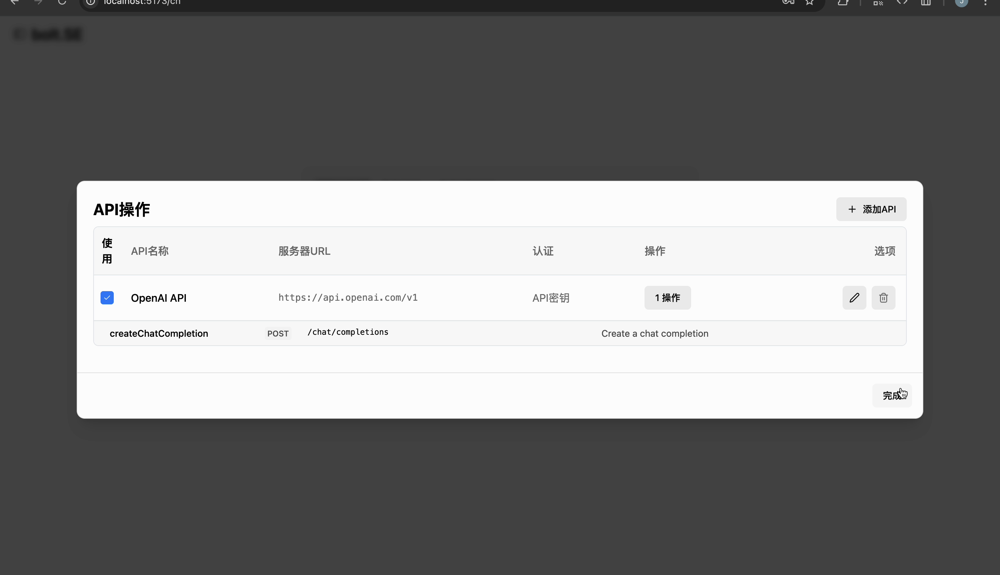

01
API-first development
Problem. Models guess at APIs they cannot see.
What I built. An API Actions manager. You paste an OpenAPI schema (YAML or JSON) and choose an auth type; its operations are parsed automatically and the definition is saved in IndexedDB. Selected APIs are added to the model’s context and shown as tags on the message.
- Paste spec
- Parse operations
- Select the API
- Generate against it
See it:



 TypeScript
TypeScript React
React Vercel AI SDK (streaming, tool calling)
Vercel AI SDK (streaming, tool calling) MCP over stdio and SSE
MCP over stdio and SSE Vitest
Vitest GitLab CI
GitLab CI Vite
Vite